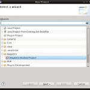
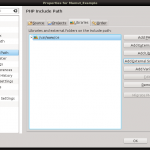
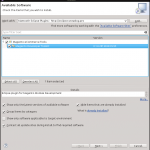
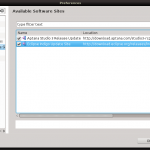
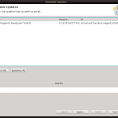

Main Features
Creating Magento Modules
Create new module within few clicks. With one simple wizard You can create full module directory structure, all required XML configuration files with ready to use content.
While creating new module You can choose Magento installation that will be used to serve contextual help within next wizards.
{kind=link}
{kind=link}
{kind=link}
Creating Models
When creating new model it takes up to 4 new files (model, resource model, collection, setup script) and need to edit one config.xml. Now it is easy two step form that will create all necessary files and XML changes. You can automatically generate phpDOC description of all getters and setters for fields and create minimal setup script (and boost version number) . You can also automatically create model rewrite with one simple click.
{kind=link}
{kind=link}
Creating Helpers
Create new classes with one click rewrite option.
{kind=link}
Creating Blocks
Create new block class and corresponding template and layout xml entry within two simple steps. You can select handler and layout reference from select field full of context hints. Did I mention one click easy rewrite before?
{kind=link}
{kind=link}
Creating Controllers
Create new controllers within two step wizard. Populate list of views You need to be created and select if You need to handle dispatching events.
{kind=link}
{kind=link}
Creating Event observers
Creating event observers never was that easy. Select model that should handle observed event (Observer model is suggested by default). Then select event to observe from filterable list of events. Some events suggestions come from previously generated events list and all model default events are generated using event prefixes staged within code.
{kind=link}
Creating Cron Tasks
Fast cron task creation - You only need to supply function name to be called and click Finish. If You need something more elaborate You can always customize suggested values.

Creating Store Config Entries
Tired of editing system.xml file? Try this three step wizard to create new config entries. With first step select or create configuration section and corresponding ACL entry. Then select configuration group and finally configure Your new configuration field.
{kind=link}
{kind=link}
{kind=link}
Creating Translation files
Maintaining translation files never was that simple. Just select language and click Finish. Modules code and configuration XML files will be searched for all translatable entries and nice translation file will be created. You still need to translate text but now all translatable texts are in one place.
{kind=link}
Creating Modman files
Are You using modman? It is nice module manager for Magento modules. Now You can create modman configuration file with one click. All single files and directories considered as safe for modman file are automatically added to modman. You can quickly verify that every thing is all right and exclude/include files and directories within tree viewer.
Note that all selected files will be processed by modman but the grayed one will not be put in modman configuration file.
{kind=link}
Editor helper dialogs for inserting models, helpers and store configuration
Using keyboard shortcuts and context menu now You can quickly inject models, helpers, translations and configuration entries into Your Magento module code without worrying about misspells.
- Use Alt + M to inject
Mage::getModel - Use Alt + H to inject
Mage::helper - Use Alt + C to inject
Mage::getStoreConfig - Use Alt + T to inject
Mage::helper('my_module')->__("")
{kind=link}
{kind=link}
{kind=link}
This short step by step tutorial will show You basics of using this eclipse extension. Starting with creating simple project, proper configuration for successful context help and walk through some of available wizards.
Getting started
Using Magento Module Project creation wizard
First step to Your new Magento extensions is creating new Magento Module Eclipse Project. Select New from File menu and then Project. Select Magento Module Project from Magento category (You can also start typing Magento Module Project in filter field) and click Next.
On next screen You will be prompted to fill out basic module data: Your vendor namespace, module name and module short name. Module short name defaults to vendor_name but feel free to modify it anyway. Be aware that change to vendor or module name will reset short name. Every change of short name will modify entries on the next screens. Select code pool, initial module version and active flag. This options will be passed on to configuration XML files. Last step to do on this screen is select Magento base version. With default installation You can choose between Community Edition 1.7 and Enterprise Edition 1.12. You can add information about Your store following steps in Extracting data from own Magento installation.
In the next step You can select what components should be auto generated in module config XML file. Since version 0.1.6 missing components of config XML file will be generated when needed after going through appropriate wizard. Selecting default helper check-box will crate Helper class Vendor_Name_Helper_Data.
On this last screen You can select witch controller entries in XML file should be created and type in corresponding front names for this controllers groups. After You press Finish all needed files and directories will be created. If it is Your first Magento project You will be prompted to open new Eclipse Perspective based on PHP perspective setting magento specific shortcuts within New sub-menu.
Setting up context help
Since all wizards uses data from pre-prepared data sets (form which You select Magento base version while creating module project). But to provide contextual help while editing PHP files - like suggesting class methods or fields - You need to add magento source code to Your project. In project properties (click right on project in project explorer and select Properties) select PHP Include Path view and click on Add External Source Folder. In newly opened directory selector dialog select root of Your magento source folder. Confirm selection with Ok button and confirm again. From now Eclipse will search magento source folder for code suggestions.
{kind=link}
First Model
In order to create new magento model select Model from New sub-menu (either in File menu or in context right click menu project explorer within magento perspective). Within first screen You can select in witch project model should be created (Container field - You can use Browse button or type in project name). Specify module name, note that name will be a valid name to use in Mage::getModel call - translation of model name into class name can be seen in Class line. You can either type in or select using selection dialog available after clicking Browse button (note that first use within project may take some time to find all available classes and remember that You use wild chars like * in dialog filter field). If model You need to add magento model rewrite entry to config XML file just select Create rewrite in config.xml. Next two fields are responsible for magento model events and will be shown in code as fields. Now You can either press Finish and create model or select Create resource model (and create collection if needed) and continue to next screen using Next button.
Within last screen You can specify all data related to resource model assigned to newly created model. You have to specify database table name and fields in corresponding database table. Add new database column entries by clicking Add button. Specify column name and type. One column has to be marked as column ID. If You select Create PHPDOC for fields model class will be appended with PHP DOC entries for getters and setters for created fields. If You select Create setup script installation or upgrade file will be created in setup directory. Note that created script is base for You further work - You may consider adding indexes and foreign keys to this script. Also note that from within this screen You can boost module version. Setup script name is computed based on earlier existing setup scripts and module version in configuration files and Target version field.
Extracting data from own Magento installation
If provided base versions of Magento are not enough for You (because You use lot of custom modules on Your shop) You can gather helpful data running shell tool.
Download Magento Eclipse Plugin Shop Configuration Shell Tool.
After successful download extract shell tool to shell directory within Your magento installation.
$ cd /my/magento/shell
$ wget http://kamilbalwierz.github.io/magento-developer-toolkit-for-eclipse/update/extract.zip
$ unzip extract.zipRunning extracted file without any parameters will show You full documentation. Usually You will use this shell tool as follows:
$ php eclipse_plugin_tool.php --code my_shop --name "My Shop"
After execution within shell directory You will find my_shop.zip archive that You should extract into Yours Eclipse Workspace. After extracting archive into workspace You will see Magento Base Version My Shop in new magento project wizard.
Customizing auto generated code
If You want to customize auto generated code - like add licence notice to header of every created PHP class file - You will need to download source code templates (because module uses custom template engine different to default Eclipse template engine).
Download Magento Eclipse Plugin Code Templates.
You should extract downloaded archive following directory within Your eclipse workspace.
.metadata/.plugins/pl.mamooth.eclipse.magentoNote that this directory is hidden directory and that this change will affect every project within workspace.
Installation
Requirements
Magento Toolkit for Eclipse uses features of Eclipse PHP Development Tools in version 3.0 or higher. Because of that Eclipse IDE version Indigo (3.7) or higher is required.
Download current version of Eclipse IDE here.Installation process
 If You are using Eclipse Juno try to drag Install icon on the right into running Eclipse Juno to start installation process. In other cases follow instructions below.
If You are using Eclipse Juno try to drag Install icon on the right into running Eclipse Juno to start installation process. In other cases follow instructions below.
Select Install New Software from Help menu and then put http://kamilbalwierz.github.io/magento-developer-toolkit-for-eclipse/update into Work with field.
{kind=link}
Note that on March 26th 2013 update site URL was changed. If You are using old update site please update it in Available Software Sites dialog (details in How about Aptana? section)
After a short while Eclipse will fetch contents of eclipse plugins repository located under typed in address. From available plugins select Magento Developer Toolkit (may be hidden in Magento eCommerce Tools category).
Before clicking Next make sure that Contact all update sites during install to find required software" is selected. After clicking Next You will be shown plugins to install with all dependencies, click Next to be presented with software licence agreements. After You agree to presented licences You will be able to click Finish. After installation process is completed You will be prompt to restart Eclipse - it is good idea to restart eclipse just after installation.
How about Aptana?
Since Aptana Studio 3 is based on Eclipse Indigo there is no problem with using Magento Eclipse Plugin with it. Aptana uses custom PHP support libraries when Magento Eclipse Plugin uses libraries available in basic Eclipse IDE. In order to be able to install those libraries You need to activate Eclipse Indigo Update Site that provides those libraries in your installation of Aptana Studio.
Select Install New Software from Help menu and select "Available Software Sites" make sure that "Eclipse Indigo Update Site" is checked. Now You can go back to Install New Software dialog making sure that "Contact all update sites during install to find required software" is selected and proceed with installation as in normal Eclipse.
Updating to newest release
Just select Check for Updates from Help menu, after Eclipse connects all update sites and checks if there are any updates available You will be prompted to select those You want to download and apply. Select Next to be presented with list of updated features. After clicking Next You will be prompted with licence agreement. Select Finish to download and install selected updates.
{kind=link}